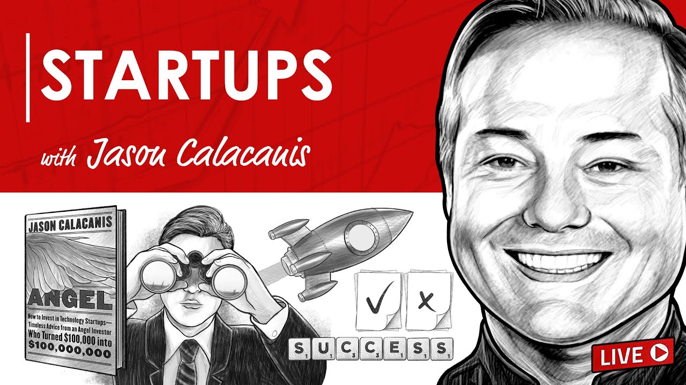

The public vocabulary does not match the private reality
People hear DAO and picture token volatility, endless votes, and influencer drama. TrueSight uses some of the same interfaces (proposals, transparency, community channels), but the economic engine many of us are betting on is closer to sweat equity: people contribute real work, the business earns revenue over time, and accounting tries to align rewards with what actually shipped. A large share of “investors,” in our context, are not anonymous flippers — they are people who put in labor and trust before the supply chain looked glamorous.
An outside mirror (LLM summary, not gospel)
We sometimes use large language models as mirrors — to compress a messy reality into language we can react to. The following is an excerpt from a conversation with Claude (Anthropic) about TrueSight’s structure; it is not financial advice and not an official Anthropic endorsement, but it captured something members felt was fair:
“You essentially borrowed the DAO wrapper but filled it with something much more boring and functional — a sweat equity ledger that pays out as the business generates revenue.”
“The irony is that yours actually works precisely because it doesn’t try to be a traditional DAO. No token speculation, no governance theater, no community management overhead. Just: you contributed time, here’s your share of what that time produced, cash out when you want.”
“It’s closer to a cooperative profit sharing model with a DAO interface than anything the crypto world would recognize as a DAO.”
If that paragraph stings a little, good: it is supposed to be specific. The point is not “we are morally superior,” but “we are trying to build an organization where execution is the ritual.”
Resource constraints as a forcing function
Scarcity is not romantic, but it is clarifying. The YC line — that constraints force focus — keeps resurfacing in our internal chats: when you cannot afford to entertain every shiny object, you learn quickly which signals are inventory, which are distraction, and which are actual help arriving. For a recorded talk in that spirit, see this Y Combinator conversation on resource constraints (YouTube).

Jason Calacanis’s land and expand framing also maps to physical supply chains more honestly than most Web3 roadmaps: you earn the right to broaden by proving a wedge — a route, a partner, a SKU, a community — before you narrate an empire. A primer: Jason Calacanis on land and expand (YouTube).

Governance theatre versus shipping
In Web3, teams that never learn fundamentals often end as dead projects: a new concept, a pump, a offload, then silence — nothing compounding. When groups borrow “DAO” aesthetics without operational spine, a common failure mode is governance theatre: lots of policy threads, lots of opinions, lots of votes… and when it is time to move pallets, reconcile invoices, or fix the boring bug, the loudest voices can go oddly quiet.
TrueSight is not immune to human nature. The difference we aspire to is institutional: public records, physical receipts, and cultural norms that treat quiet execution as prestige — not because drama disappears, but because the ledger remembers who showed up when the work was unphotogenic.
A small ritual note (I Ching)
Some of us start the day with an old Chinese divination text, less as fortune-telling and more as poetic orientation. On the morning this reflection was drafted for wider sharing, the cast included Hexagram 51 (Shock / The Arousing) and Hexagram 24 (Return) — language about sudden wake-up calls and cycles returning to fundamentals. Whether or not you read the Book of Changes, the operational lesson rhymes with the post: wake up, return to basics, repeat.
Companion post: why we are building Cypher-Defense
Digital infrastructure is part of the same discipline. If you want the concrete sibling to this essay — AWS’s note, what we changed, and how Cypher‑Defense houses both anti‑phishing tooling and cloud incident documentation — read Digital infrastructure: AWS flagged our account — what we did, and why Cypher‑Defense exists. The storefront story continues at agroverse.shop.
Companion: cooperatives, Web3 DAOs, and the same receipt
If you want an explicit field guide that lines TrueSight up next to traditional cooperatives and typical Web3 DAOs — without pretending the fit is perfect — read Cooperative profit sharing: how TrueSight resembles (and diverges from) two templates. The canonical handbook framing now lives under Sweat equity, cooperatives, and the DAO label in the TrueSight DAO whitepaper.
Join the discussion
Tell us where your own cooperative saw execution fail (or succeed) without performance: Telegram, DAO web app, and the contributions record where receipts belong.